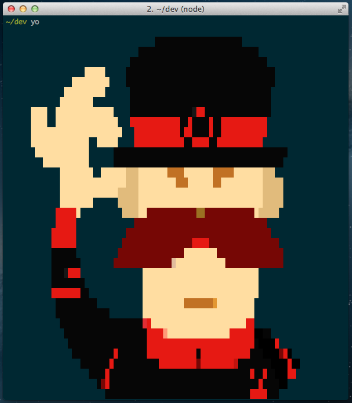
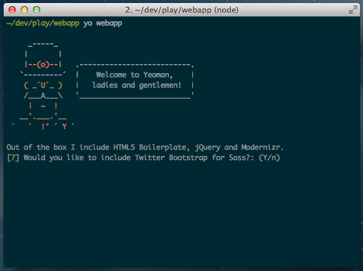
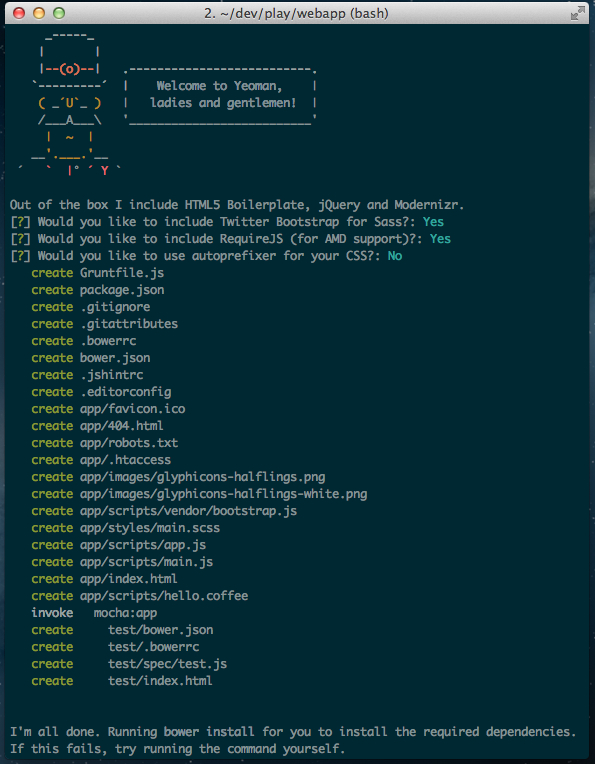
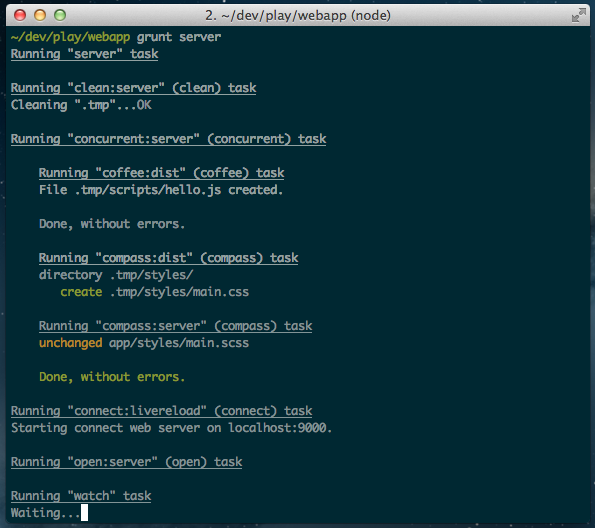
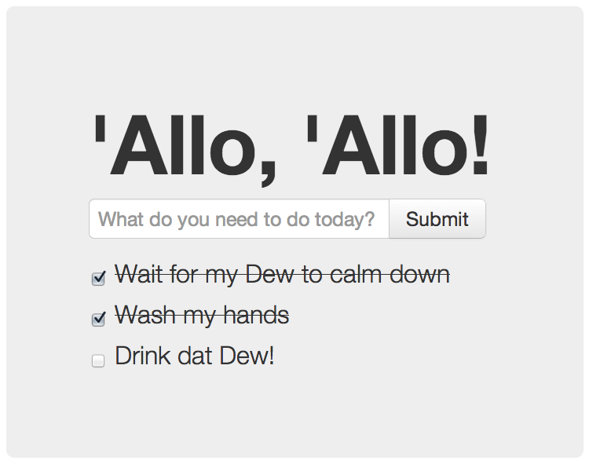
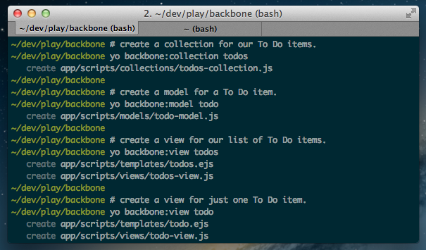
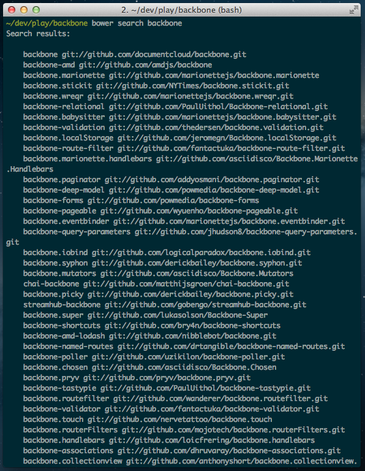
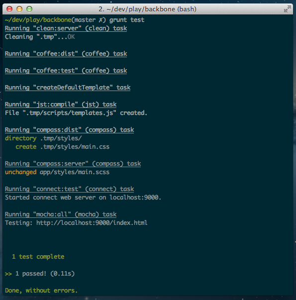

Trick question. It's not a thing. It's this guy:

Basically, he wears a top hat, lives in your computer, and waits for you to tell him what kind of application you wish to create. As an example, scaffolding a web application would look something like this:

The first thing that comes to mind is OMG so dreamy. Second, thanks, bro.
All we did was tell him what we wanted and he replied with specific questions to give us even more control.
Let's go back a step, though. Not every new computer comes with a Yeoman pre-installed. He lives in the NPM package repository. You only have to ask for him once, then he packs up and moves into your hard drive. Make sure you clean up, he likes new and shiny things.
He's a person with feelings and opinions, but he's very easy to work with. If you think he's too opinionated, he can be easily convinced.
Let's take a second to break apart what that yo webapp command really did.
This is an OS X, Linux, and Windows friendly system-wide command that scours your hard drive for any installed "generators," then gives them control based on the next argument:
This is actually a separate plug-in, or "generator," called generator-webapp. Yeoman recognizes other generator-____ Node modules, which opens the door for using Backbone, AngularJS, and countless other you-name-it generators.
Something important to take away from this is it's the generator-webapp module that prompts us with questions. The same goes for any other generators we install. They are maintained by the community, not necessarily the Yeoman team members themselves.
By using Yeoman, you're not saying "I want to do things your way, master. *bow* *bow*," without having any control. It's actually quite the opposite. What you're really saying is, "I want to make an application that follows best practices that have been discovered by frequent users and contributors of the web development community."
Seriously, you have to say it just like that, or it won't work.
Should you prefer to do something differently than what he gives you, you simply change the code that was generated for you, or even go to the source of the "generator" itself, and send in your contribution.
Our buddy, yo has some buddies of his own, and thinks you'll all get along over endless tea and smiles. If you haven't heard of [Grunt](http://gruntjs.com) or [Bower](http://bower.io), here's a quick summary of what these give us:
Grunt is a JavaScript-based task runner, that does the dirty stuff. Like yo, it also provides a base set of functionality, then allows the community to share their own plug-ins, or "tasks" that help accomplish common things. When you scaffold your application with yo webapp, Grunt and some hand-picked tasks will come along, which accomplish things like running your website in a local development environment, concatenating and minifying your code, optimizing your images, and much more. Tasks are run through the command line, by typing grunt server, grunt build, grunt test, and many more.
Tasks are defined and customized in a Gruntfile.js file, which lives in the root directory of your project. Check it out to see what Yeoman set up for you.
Nobody likes going to GitHub or random developers' sites to download a .zip of a JavaScript tool. Like when fetching a Node package with npm install ___, Bower lets you say bower install ___. The component is then saved in a directory of your choosing, generally, app/bower_components/ for Yeoman-generated apps. Assuming you wanted jQuery, you would run the bower install query command, then include the relevant file inside of your HTML file. In our case, <script src="bower_components/jquery/jquery.js">.
Let's get wild. It's time to create an app.
Real quick though, find your nearest terminal and make sure you have yo installed globally:
$ npm install -g yo
Create a folder we can play around in, then run:
$ yo webapp
Here's what should have happened:
Did it? Good!
To prevent you from scrolling up through all of the text that was just spit out at you, here's an overview:

The new web application was scaffolded and your Bower components and NPM packages were automatically installed.
Open all this new stuff in your favorite editor, and we'll look over what we have.
├─ app/ │ ├─ images/ │ │ ├─ glyphicons-halflings.png │ │ └─ glyphicons-halflings-white.png │ ├─ scripts/ │ │ ├─ vendor/ │ │ │ └─ bootstrap.js │ │ ├─ app.js │ │ ├─ hello.coffee │ │ └─ main.js │ ├─ styles/ │ │ └─ main.css │ ├─ .htaccess │ ├─ 404.html │ ├─ favicon.ico │ ├─ index.html │ └─ robots.txt │ ├─ node_modules/ │ ├─ so/ │ ├─ many/ │ └─ packages/ │ ├─ test/ │ ├─ spec/ │ │ └─ test.js │ ├─ .bowerrc │ ├─ bower.json │ └─ index.html │ ├─ .bowerrc ├─ .editorconfig ├─ .gitattributes ├─ .gitignore ├─ .jshintrc ├─ bower.json ├─ Gruntfile.js └─ package.json
If you take anything away from this article, let it be the beautiful file/folder text representation above. That just took a whole Mountain Dew of my time.
Back on track. What you're looking at is the most common application structure a Yeoman generator will produce.
app/ is where your pure, non-compiled, non-minified source code lives.
app/scripts/ is where your JavaScript goes. You're free to create sub-directories and even use CoffeeScript if that's your cup of tea. That didn't make sense. Again. You're free to use TeaScript if that's your cup of coffee. Nope.
app/styles/ is where your CSS goes. Again, sub-directories, LESS, Sass, whatevs.
app/index.html is the non-minified version of index.html that will eventually be squashed and delivered to the client. More on that later.
Gruntfile.js has all of the build, server, and test tasks defined.
At this point, yo has done his job. He's given you everything you need to launch a production-ready web application. Let's now shift our focus to what Grunt tasks he's pre-configured for us.
Running grunt build takes your app/ source code files and turns them into a distributable application, which ends up in dist/.
That dist/ folder is what you feed to your server. dist/ will have it's own index.html, with references to minified and concatenated dist/scripts and dist/styles, and optimized dist/images. Your users will appreciate this. Your phone-card, dial-up users will really appreciate this.
Behind the scenes, grunt build is a task that runs several sub-tasks. One of those is grunt-usemin, which looks for blocks inside of your app/index.html, like this:
<!-- build:js scripts/main.js --> <script src="bower_components/jquery/jquery.js"> <script src="scripts/main.js"> <!-- endbuild -->
After your grunt build task completes, you will end up with this:
<script src="scripts/c155266f.main.js">
It sucked those scripts up, concatenated, minified, and even prefixed them with unique hashes to prevent browsers from caching outdated versions. Quite powerful.
That's one of the shining features about using Yeoman. Instead of manually defining what you want your build process to do each time you create an application, you can just place some trust in Yo and your chosen generator. Together, they'll wire you up with everything you need to launch a production-ready application.
Now that you've seen what type of work grunt build will do when your application is complete, you should probably start working on your application! We'll create one together in just a sec, but first let's see what kind of workflow we'll have. Like grunt build, grunt server uses several other Grunt tasks to make development as easy as it can be.
Try it out:

The aforementioned "several other Grunt tasks" are:
clean: Yeoman stores some stuff in a .tmp folder. That will be wiped out.
coffee: Compiles your CoffeeScript files from app/scripts.
compass: Compiles your Sass files from app/styles.
connect: Creates a local server, watches for changes to your source files, then triggers a reload in your browser.
open: Opens the server instance, typically localhost:9000 in your browser.
Make an edit or two in the source files to see the change reflected in the browser. Like I said above, this is about as easy as it can be. It just works.
I of course meant appetizers. Grab some cheese sticks, then meet me in a little bit.
Wash your hands!
To get a feel for some other Yeoman generators, let's try out Backbone. We'll create a simple To Do app, use Bower for our dependencies, and introduce you to a real-life workflow with Yeoman.
$ Sound good? (Y/n)
I'll assume you entered "Y". We ride! But first:
# Install the Backbone generator:
$ npm install -g generator-backbone
# Make another play directory, then do this:
$ yo backbone
_-----_
| |
|--(o)--| .--------------------------.
`---------´ | Welcome to Yeoman, |
( _´U`_ ) | ladies and gentlemen! |
/___A___\ '__________________________'
| ~ |
__'.___.'__
´ ` |° ´ Y `
Out of the box I include HTML5 Boilerplate, jQuery, Backbone.js and Modernizr.
Would you like to include Twitter Bootstrap for Sass? (y/N) No
Would you like to include RequireJS (for AMD support)? (y/N) No
Open the new app in your editor. Things should feel quite familiar after our experience with the web app generator. You still have an app directory, with scripts/, styles/ and an index.html.
Before we start editing files, run:
$ grunt server
As we talked about earlier, this starts the server, sets up watches on our files, blah blah yipsie-doodle. Your browser should open, and you should be greeted with an accent:
Well, shoot, we have to keep that. It's just so nice. However, let's clear out the other stuff.
<div class="hero-unit"> <h1>'Allo, 'Allo! <section id="todo-app"> <!-- Where our To Do app will go --> </section> </div> </div>
When you save, your browser will refresh, and there we have it! Just a simple, warm "'Allo, 'Allo".
Let's get ourselves a game plan. We know we're going to create a To Do app, but what might that look like? Will we need any other libraries to help us?
Hmm.
It's been at least 4 seconds, and I haven't heard any answers.
Alright, I'm gonna grab another Dew after that file tree drank my last one. I'll let you know if I think of anything.
B3. A terrible slot in a vending machine for a carbonated drink. Fizz, foam, disaster.
While I was in the bathroom washing my hands, I had a vision.
[ Add a New To Do ] ← input
checkbox
- clicking will draw a line through the title of the todo item
↓
[x] To Do Item #1
[ ] To Do Item #2
↑ title
- double clicking will trigger an "edit" mode
Or...

Let's set ourselves up with a structure that will bring this vision to life.
generator-backbone came with some secret weapons: sub-generators. yo backbone scaffolded our application, but flip back to your terminal and check out what these guys can do:

Check out your index.html:<!-- build:js scripts/main.js --> <script src="scripts/main.js"> <script src="scripts/templates.js"> <script src="scripts/collections/todos-collection.js"> <script src="scripts/models/todo-model.js"> <script src="scripts/views/todos-view.js"> <script src="scripts/views/todo-view.js"> <!-- endbuild -->
How 'bout that! It not only created and placed files in relevant directories, it even included them in your HTML for you.
I've created a repository for our To Do application— [go check it out](https://github.com/stephenplusplus/yo-backbone-todo-app). We'll take a glance at the files together, but please refer to the repository to get the full code.
/*global backboneApp, $*/
window.backboneApp = {
Models: {},
Collections: {},
Views: {},
Routers: {},
init: function () {
new this.Views.TodosView({
collection: new this.Collections.TodosCollection()
});
}
};
$(document).ready(function () {
backboneApp.init();
});
The Backbone generator is establishing some good practices you can use right out of the box. It took the name of your directory, in my case "backboneApp", and exposed an object literal to hold the Models, Collections, and other Backbone objects we may create.
The generator also incorporates JSHint into your app's build process, making sure your code is of the highest, most consistent quality. You are encouraged to customize your preferences inside the `.jshintrc` file in the root of your project's directory.
Finally, $(document).ready will call backboneApp.init, which creates a TodosCollection, then passes it into a TodosView. I'll go over these in more detail soon.
/*global backboneApp, Backbone*/
backboneApp.Collections.TodosCollection = Backbone.Collection.extend({
localStorage: new Backbone.LocalStorage('backbone-generator-todos'),
initialize: function () {
this.model = backboneApp.Models.TodoModel;
}
});
If we want our To Do app to be somewhat usable, we have to store our To Do items somewhere. There's a handy Backbone adapter you may be familiar with called Backbone.LocalStorage. It will intercept Backbone's calls to the default remote backend and use your browser's window.localStorage instead.
We know we'll need the Backbone.LocalStorage adapter, but where should we go to get it? Idea! Idea!
We haven't made much use of Bower directly. When our application was scaffolded, Bower was used behind the scenes to grab Modernizr, Twitter Bootstrap, jQuery, Underscore, and Backbone. But, what if we want to add in another JavaScript dependency?
Go back to your favorite terminal and try this:
$ bower search backbone

Ok, wow. That's... a lot. Maybe we should narrow that down.
$ bower search backbone.localstorage
Search results:
backbone.localStorage git://github.com/jeromegn/Backbone.localStorage.git
There we go. Now we just have to install it.
$ bower install backbone.localStorage --save bower cloning git://github.com/jeromegn/Backbone.localStorage.git bower cached git://github.com/jeromegn/Backbone.localStorage.git bower fetching backbone.localStorage bower checking out backbone.localStorage#v1.1.4 bower installing backbone.localStorage#v1.1.4
When working with multiple developers, it can be troublesome assuring everyone has the correct dependencies and matching versions. By using --save above, we are telling Bower to remember this new dependency, then write about it in our bower.json file. When another developer clones your project, they just have to run bower install to download every dependency, keeping everyone in sync. That's why app/bower_components is listed in your .gitignore file. Gone are the days of bloated repositories!
Now that Bower has awesomed all over our application, go into app/index.html and update the scripts/vendor.js comment block:
<!-- build:js scripts/vendor.js --> <script src="bower_components/jquery/jquery.js"> <script src="bower_components/underscore/underscore.js"> <script src="bower_components/backbone/backbone.js"> <script src="bower_components/backbone.localStorage/backbone.localStorage.js"> <!-- endbuild -->
When you save the file, your browser will refresh and you'll have the new library ready to use. More specifically, TodosCollection will have it ready to use.
/*global backboneApp, Backbone*/
backboneApp.Models.TodoModel = Backbone.Model.extend({
defaults: {
title: '',
completed: false
},
toggle: function () {
this.save({
completed: !this.get('completed')
});
}
});
This is a pretty basic Backbone Model. We set some default properties for our To Do items and define a toggle function, simply used to switch between a "Complete" or "Incomplete" state.
/*global backboneApp, Backbone, JST*/
backboneApp.Views.TodosView = Backbone.View.extend({
el: '#todo-app',
template: JST['app/scripts/templates/todos.ejs'],
events: { /* ... */ },
initialize: function () { /* ... */ },
render: function () { /* ... */ },
createTodo: function () { /* ... */ },
addTodoItem: function () { /* ... */ },
addAllTodoItems: function () { /* ... */ }
});
This is our must robust Backbone View, so to see the definitions to these various properties and methods, please refer to the repository.
However, here are a couple key things:
el: '#todo-app'This selector matches that
<section id="todo-app"> element we created in our index.html file. This will be our primary View.
template: JST['app/scripts/templates/todos.ejs']
This little JST thing snuck in when we said yo backbone:view ____`. When our View's JavaScript file was created, the Backbone sub-generator created a matching template file for us: app/scripts/templates/todos.ejs.
These .ejs template files will define our Views' HTML. When we run our app with grunt server or grunt build, our template files will be crushed together into a JavaScript object, JST. When our view file says template: JST['path/to/view/template.ejs'], this is referring to that object.
<form class="input-append"> <input type="text" id="new-todo" placeholder="What do you need to do today?"> <input type="submit" class="btn" value="Submit"> </form> <ul> <!-- Where our To Do items will go --> </ul>
Because we answered "Yes" to including Twitter Bootstrap for Sass when we scaffolded our application, I've added a couple of class names to pretty up our app. Feel free to style to your heart's content in the styles/main.scss file.
@import 'sass-bootstrap/lib/bootstrap';
.hero-unit {
margin: 50px auto 0 auto;
width: 300px;
}
form {
margin-top: 10px;
}
ul,
li form {
margin: 0;
padding: 0;
}
ul {
list-style: none;
}
li form {
display: none;
}
.editing {
span {
display: none;
}
form {
display: inline-block;
}
}
input:checked ~ span {
text-decoration: line-through;
}
Sass is pretty cool.
Also, it's pretty cool that the browser still reloads when you make a change to your Sass files. If you've used Sass before, you know it can be a hassle to get a productive development environment set up quickly. Out of the Yeoman box, you're editing, watching, and reloading with none of the aforementioned hassle. Smiley face.
/*global backboneApp, Backbone, JST*/
backboneApp.Views.TodoView = Backbone.View.extend({
tagName: 'li',
template: JST['app/scripts/templates/todo.ejs'],
events: {
'click input[type="checkbox"]': 'toggle',
'dblclick span': 'toggleEdit',
'submit form': 'toggleEdit'
},
initialize: function () { /* ... */ },
render: function () { /* ... */ },
toggle: function () { /* ... */ },
toggleEdit: function () { /* ... */ }
});
This TodoView will represent an individual item. It will be an with some custom functionality handling click, double click, and submit events, enabling a user to edit and save a To Do item.
<input type="checkbox" <% if (completed) { %>checked<% } %>>
<form>
<input type="text" value="<%= title %>">
</form>
<span>
<%= title %>
</span>
Simple enough. We're using some basic Underscore templating to spit out values and toggle a checked state on our checkbox.
Our To Do application is actually done! It's quite basic in functionality, but you should have a sense of how natural it is to develop an application using Yeoman and his Generator buddies. And even though the functionality is basic, none of the techniques we used to get here were "basic." We're using smart, efficient libraries (Sass, Backbone, Underscore) with a finely-tuned development process (Grunt, LiveReload, Compass), and it took us only a few terminal commands.
If you're like me, you probably want to stop with the To Do stuff and start making your own applications. If you want to go play around, go for it! When you're done generating like a crazy person, come back and let's ship our To Do app.
Let's put this thing in the water and see if she floats! Do NOT put your computer in the water. Wait, would a MacBook Air float? No, probably not. Hmm...
That was a dangerous paragraph. Let's just get our app ready for production, safe and dry.
grunt server has been amazing, but it's time to meet his brother, grunt build. We talked about him a bit earlier, but let's go over a few more details.
Here is what the grunt build task is defined as in your Gruntfile.js:
grunt.registerTask('build', [
'clean:dist', // Clears out your .tmp/ and dist/ folders
'coffee', // Compiles your CoffeeScript files (if any)
'createDefaultTemplate', // Creates a JS file that sets up your JST object
'jst', // Compiles your `scripts/templates/` files
'compass:dist', // Compiles your Sassiness
'useminPrepare', // Looks for those in your HTML
'imagemin', // Optimizes your images!
'htmlmin', // Minifies your HTML files
'concat', // Task used to concatenate your JS and CSS
'cssmin', // Minifies your CSS files
'uglify', // Task used to minify your JS
'copy', // Copies files from .tmp/ and app/ into dist/
'rev', // Creates unique hashes and re-names your new JS/CSS files
'usemin' // Updates the references in your HTML with the new files
]);
So, that thing is pretty legit. All of these tasks are defined inside of Gruntfile.js, so feel free to poke and tweak around to customize your application's build. It's highly likely you won't need to do any customization at all, but it's there if you need to.
Oh, one other thing. grunt build is actually wrapped inside of another task.
Simply running grunt will execute the default task:
grunt.registerTask('default', [
'jshint',
'test',
'build'
]);
Those first two tasks, jshint and test are easy to overlook when rushing an app out the door, but are very important.
The jshint task will consult with your .jshintrc file to learn your preferences, then scan through all of your JS files to make sure your rules are abided by. To get the full run down of your options with JSHint, check the JSHint documentation.
The `test` task looks like this:
grunt.registerTask('test', [
'clean:server',
'coffee',
'createDefaultTemplate',
'jst',
'compass',
'connect:test',
'mocha'
]);
It basically does enough to create and serve your application for your test framework, Mocha, to execute your tests.
Oh crap, tests.
Next door to your `app/` and `dist/` directories, this little `test/` buckaroo has been waiting for our attention. Aww.
If you open that up, you'll see test/ has its own bower.json and index.html, as well as a spec/ directory. Your tests will have some dependencies of their own, the Chai Assertion Library and Mocha testing framework.
Expand that spec/ directory and you'll see a test.js file that looks something like this:
/*global describe, it */
'use strict';
(function () {
describe('Give it some context', function () {
describe('maybe a bit more context here', function () {
it('should run here few assertions', function () {
});
});
});
})();
Ok, looks like we could use a pull request to correct some grammar. Anybody?
If you haven't written your own tests before, you'll see terms like describe, it, before, beforeEach, after, and afterEach pop up. describe is a wrapper for a group of related tests, ____Each are optional functions that will execute before or after your test(s), and each it is a specific test.
Try running a grunt test to see all the magic unfold.

You should play around and see if you can write some tests for our To Do application. A few ideas for test cases might be:
There's only one more thing to do.
$ grunt
You should see our favorite words: Done, without errors.
Yeoman is still quite young; he just turned one! Things are pretty great now and they're only going to get better. However, like all one year olds, Yeoman is still learning to walk without falling, and talk without drooling. You just might run into a bug or two. In times like these, think of him like your cute little nephew. He needs positive role models in his life, so help him learn!
That got real children's book-y, real fast. I'll grow it up a little: there are bugs and we need your help to squash the doody out of them (I said "a little"). Even if it's not a bug, but you're like, "I know a MUCH faster Grunt plug-in this generator could use," report it to the appropriate generator's issue tracker.
If you want to learn some more about Yeoman or just get to know the team, you'll find us peppered all over the following sites.
If you're just plain stuck, try one of the following resource for a helping hand.
Yeoman is just one piece of the entire stack— NPM, Node, Grunt, and Bower. It can be intimidating if you're unfamiliar with these, but it is crucial not to fear the curve! Learning will need to happen, and like always, it will probably need to happen the hard way before it really sticks.
Psst, if you're using sudo before every command, run, don't walk, to Node and NPM in 30 Seconds. There, you'll find several scripts you can run to give control back to your user account. It will also help you install Node and NPM if you're starting from scratch.
Like all tools, I believe Yeoman is something every developer should try. If you give it a shot and find it's not suitable for your task, I and the rest of the team would love to hear why. If you need a buddy to help you with your project, come find me. I'm always available around the links above, or just ping me on Twitter. I'm @stephenplusplus or Stephen Sawchuk.
Nice to meet you.